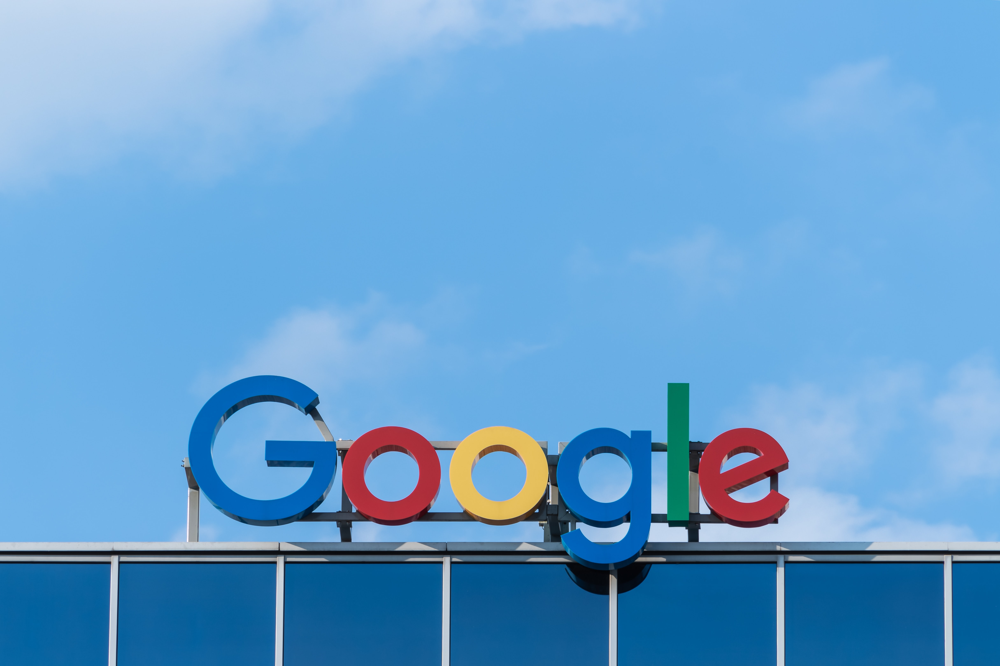

구글(Google)은
웹 검색, 포털 사이트, 또는 관련 사이트를 운영하고 광고를 주 사업 영역으로 하는 미국의 다국적 IT 회사,
또는 구글 사가 서비스하는 검색 엔진을 가리킨다. 전 세계에서 압도적 1위를 차지하는 검색 엔진이며,
2018년부로 20주년을 맞는 다국적 기업이자 역사상 가장 큰 인터넷 기업 중 하나로 마이크로소프트, 아마존닷컴, Apple과 함께 MAGA의 일원이다.
2015년 8월 11일 지주회사 체제로 전환하면서, 기업 알파벳이 새로 세워지고 그 자회사가 되었다.

구글은 탄생 이후 세계 최대의 포털 사이트가 되기까지 10년도 채 걸리지 않았으며, 인터넷으로 무료 서비스를 중심으로 돈을 벌 수 있다는 걸 입증하였다. 2013년 10월, 구글이 UI 변경을 하면서 로고가 무광으로 바뀌었고 검색창 디자인이 간단해졌지만, 부가 기능을 사용하기 위해서는 앱 아이콘을 눌러야 한다. 로고 변천사는 본 문서의 아래쪽을 참고. 2015년 8월 래리 페이지가 구글의 새로운 모기업인 알파벳을 출범하고, 알파벳의 CEO가 되었다. 새 구글 CEO직에는 안드로이드 & 크롬 부서 최고장이었던 순다르 피차이가 임명되었다. Android Police 기사 참조 위 abc.xyz 홈페이지 들어가서 보면 래리 페이지가 남겨놓은 전문 중에 흥미로운 이스터에그가 숨겨져 있다. 찾고 싶다면 구글 크롬에서 Ctrl+F 로 검색, effort 를 치고 그중 마침표를 찾아 보시라.